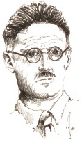

James Joyce’un Ulysses (1922) adlı eseri yirminci yüzyılda yazılmış en önemli İngilizce roman sayılmaktadır. Homeros’un Odysseia’sını İrlanda’nın Dublin kentinde geçen tek bir güne, 16 Haziran 1904’e uyarlar ve Odysseus’u, günü getir götür işleriyle geçirip geç saatlerde evine dönen, yaşlanmaya yüz tutmuş, boynuzlanmış bir reklam satıcısı olan Leopold Bloom’un aldatıcı görünüşünde canlandırır.

Bloom mütevazı ve sıradan görünmesine rağmen, tanıştığı tuhaf karakterlerin hemen hemen hepsine merhamet, bağışlayıcılık ve cömertlik gösteren kahraman bir kişilik olarak ortaya çıkar. Göze çarpmayan, alelade davranışlarıyla belki de modern dünyada ancak mümkün olabilen, basit kahramanlıklarda bulunur. Çoğunluğun Katolik olduğu İrlanda’da bir Yahudi olarak kendisini dışlanmış hissetse de iyimser kalmaya devam ederek güvensizliklerini bertaraf eder.
Ulysses karakterlerinin inanılmaz zengin portreleri, diğer edebi ve kültürel eserlere yaptığı şaşırtıcı göndermeler ve dile kazandırdığı pek çok yenilikle ünlenmiştir. Joyce roman boyunca tiyatrodan eski İngilizceye ve reklam metinlerine kadar çeşitli edebi türler ve yapılar üzerinde durur. Roman belki de en çok bilinç akışı yönteminin, yani Joyce’un karakterlerin aklından geçenleri herhangi bir şekilde düzenleyip sıraya koymaksızın oldukları gibi verme girişiminin yaygın kullanımıyla ünlüdür. Bu teknik modern edebiyata damgasını vurmuştur ve eserlerinde bu tekniği kullanan Virginia Woolf ve William Faulkner gibi sayısız yazarı da etkilemiştir.
Ulysses’in, özellikle Bloom’un eşi Molly’nin düşüncelerinin dile getirildiği ünlü son bölümünün, zorlayıcı bir okuma olması şaşırtıcı değildir. Molly’nin hayalleri 24.000’den fazla kelime ile anlatılır ve sadece sekiz cümlede yer alır. Zor bir bölüm olsa da bu bölümde, özellikle de Molly’nin sadakatsizliğine rağmen eşine duyduğu sevgiyi ortaya koyan son satırlar, Joyce’un en lirik ifadeleri olarak kendini gösterir:
“ve bana sordu yapıp yapamayacağımı evet dedim evet benim dağ çiçeğim ve önce kollarımı ona doladım evet ve onu kendime çektim böylece göğüslerimdeki parfümü hissedebilirdi evet ve kalbi deli gibi çarpıyordu ve evet dedim evet diyeceğim,”
EK BİLGİ:
1. Ulysses (çoğunlukla dolaylı olsalar da), cinsel betimlemelerinden ötürü Amerika Birleşik Devletleri’nde neredeyse on iki yıl boyunca müstehcen olduğu gerekçesiyle yasaklandı.